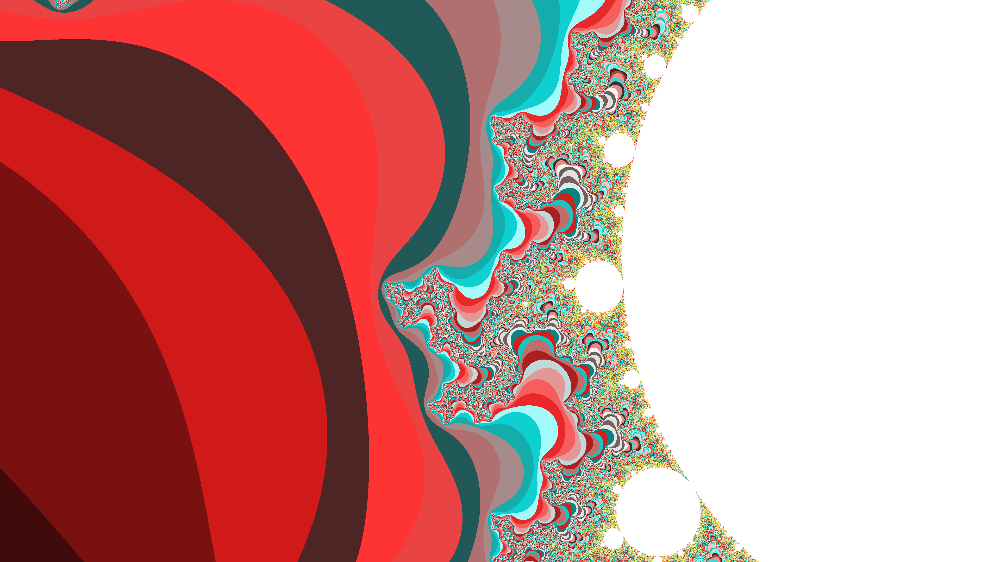
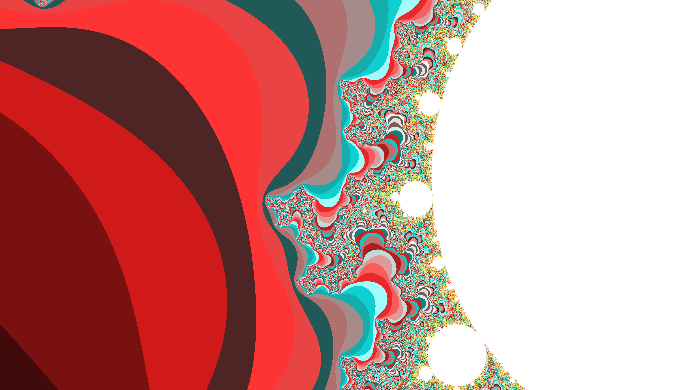
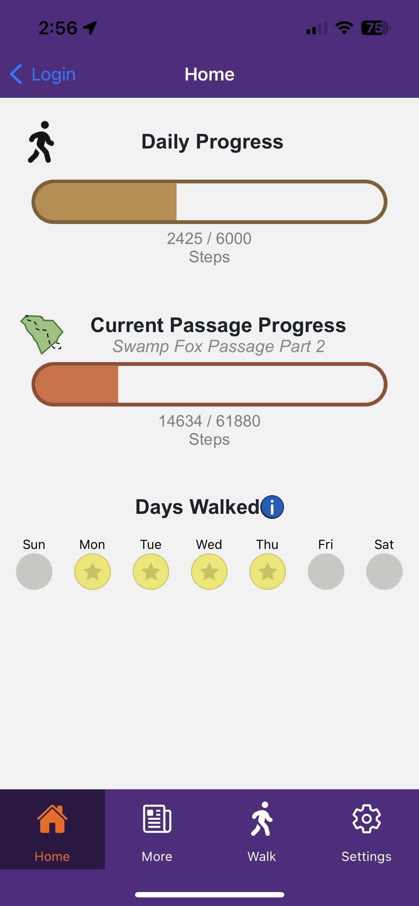
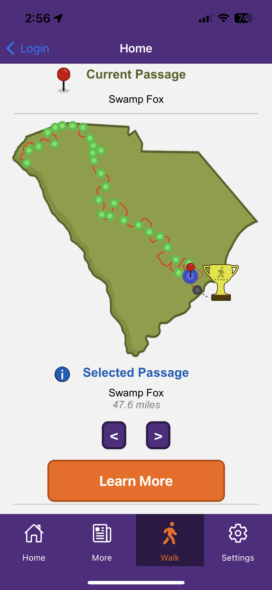
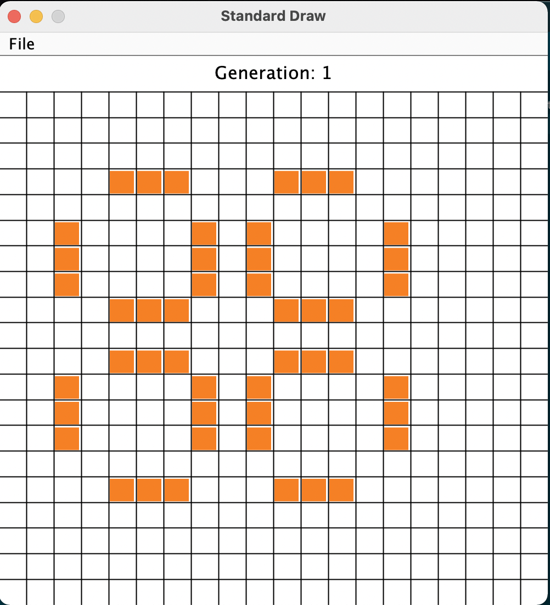
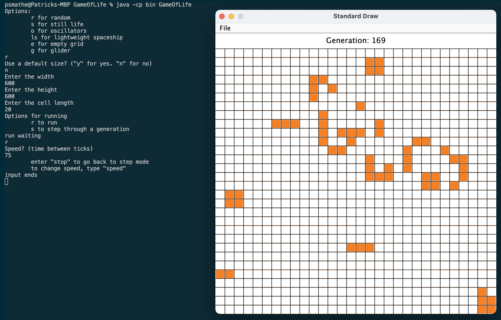
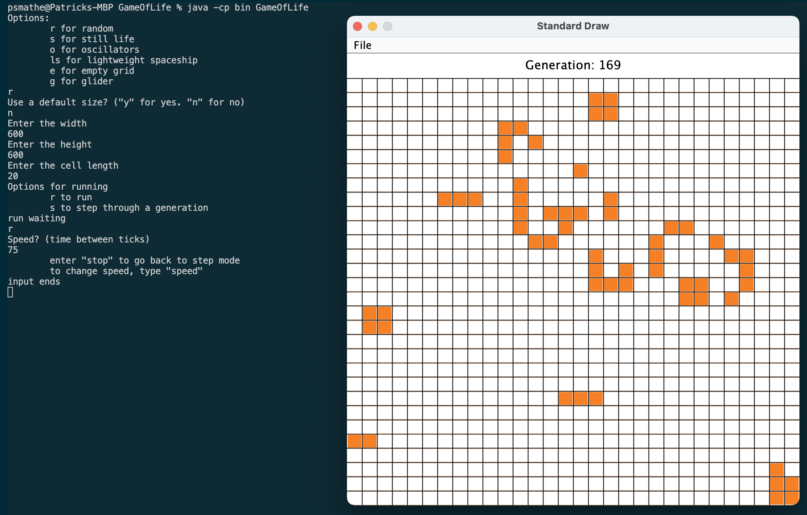

Mandelbrot
This is a multithreaded Java program that allows you to save an image of the Mandelbrot set.
The user can choose the coordinates of the set to center around, the zoom level, and the number of threads to use in the rendering process.
The code and documentation for this app is available on GitHub.
 


WalkSC
I participated in the Capstone program for my senior design class at Clemson and worked with Clemson's College of Agriculture, Forestry, and Life Sciences, and Clemson's Cooperative Extension to develop a mobile app for their WalkSC program. Me and one of my teammates stayed on the following semester to continue developement. The app is designed to help users track and reach a daily step goal as they walk the distance of South Carolina's Palmetto Trail. The app is written in React Native to enable fast development for both iOS and Android and support feature parity. It also uses a Python API and SQL database, both hosted on AWS, for the backend. Right now the app is in beta testing among Cooperative Extension Agents, and hopefully will be publicly released in the later half of 2023 by the next students to work on the project.  
Fractals.tech
Fractals.tech came about during Clemson's 2022 CUHackit hackathon as a team submission. Our project won the award for best use of a .tech domain at the event. Through this site, you can make several different types of fractals, modify the variables of the equation used to create them, and download the image to your machine. The front end website is written in CSS and HTML, Python for the math and image generation, and a FastAPI written in Python to connect them together. You can find it at fractals.iapetus.me, improved and hosted on my teammate Milo's website.
Portfolio Website
This website was originally written in HTML and CSS as a way to showcase and present my resume and projects, learn those two languages. Recently, it's be updated to use ReactJS to be able to gain some experience with that framework. This project also gave me an opportunity to learn how to use some services on AWS, such as S3, Route 53, Lambda, CloudFront, and CodeBuild/CodePipeline. This allows me to keep it low cost by hosting a static site on S3, and using CodeBuild and CodePipeline to automatically build the files whenever a new push is made to the Main branch. The source code for this website is available on GitHub.
Conway's Game Of Life
This is a Java program from high school based on John Conway's Game of Life. The user can choose from different preset game board sizes, as well as different preset gameboard setups like boards with oscillators, still lifes, gliders, spaceships, empty grids for customization, or random boards. The user can then control the speed at which the simulaiton runs, pause running, click to change a cell's status, and step through simulation rounds. The code and documentation for this app is available on GitHub.

 
